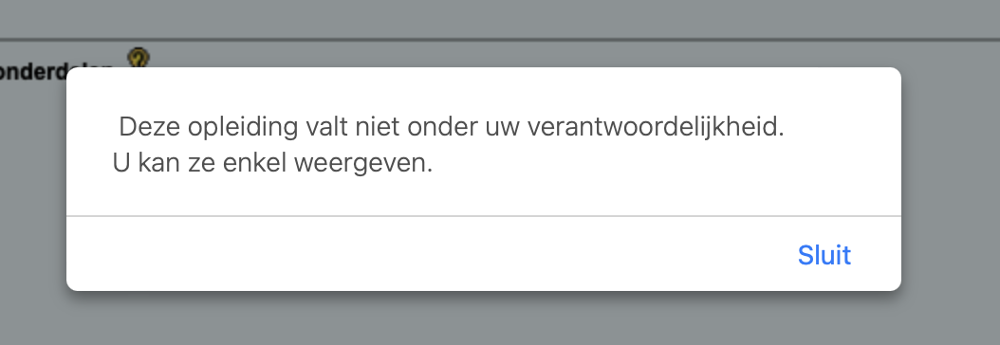
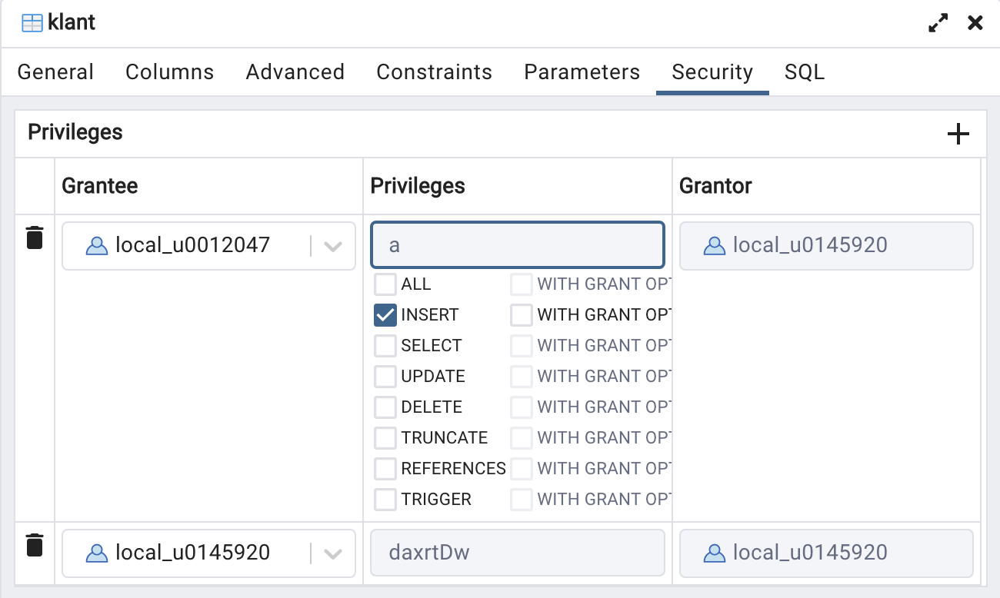

When my brothers try to draw a circle to exclude me, I shall draw a
larger circle to include them. Where they speak out for the privileges
of a puny group, I shall shout for the rights of all mankind.
—Pauli Murray
Allocation of PRIVILEGES
Consider your ISP in KULoket for a moment. Behind KULoket is an extensive
database. At the beginning of each semester you can make adjustments in your ISP
e.g.. Add or omit OPOs, adjust sequences in another phase than
your basic phase etc.
Obviously, you cannot view another student's ISP,
because that is personal information
. But have you ever wondered who within UCLL does have access
to your ISP? Who can change it?
Your student pathway coach (STC), which goes without saying because you can discuss the ISP
discuss with your STC, who, by the way, must also approve it. People from the
student secretariat, for example, sometimes have to adjust the basic sequence, so they
also get access. Ordinary lecturers (without an STC role), however, cannot view
view students' ISPs.
In this section, we'll give you a simplified look at the
rights system of PostgreSQL.
Privileges - rights
As an STC, I have limited access to all ISPs in KULoket. If I
go to my son David's ISP (studied at KULeuven), I get this
message:

Thus, I do have the right to survey the ISP.
consultbut
not to make changes to it.
Can you think of a reason why an STC at UCLL can still consult ISPs of
KULeuven students can access?
One reason is that a student pathway coach at UCLL should be able to advise new students
should be able to advise new students who were already doing something at KULeuven. In order to
assess whether such a student could get exemptions, it is
it makes sense for STC to be able to request an overview of every
student at the KULeuven association. An STC should only be able to see
what credits a student obtained, not with what grades this
occurred. So I don't get to see those credits!
We talk about "privileges" within Postgresql. Granting privileges to
other users in SQL with GRANT ... PRIVILEGE ... TO. We will first give some examples and then discuss the GRANT statements that can be useful for a database job where you need to
collaborate with other people within the same database schema.
GRANT
Without going into detail, first some examples:
GRANT USAGE ON SCHEMA examoef TO student: all users
who have the role 'student' get access to the schedule 'examoef'.
GRANT SELECT ON TABLE customer TO local_r0987654: user
'local_r0987654' is allowed to SELECT statements on the table
'customer' in the current schema.
GRANT ALL ON ALL TABLES IN SCHEMA project TO local_01234567,
local_02345678, local_03456789: give these three students all permissions to all tables
of which you are the owner.
You define access rights with the GRANT statement. This is
one of the more complex statements in SQL. We will limit ourselves to those things
that are useful for any group work. From the extensive documentation of GRANTwe extract some possibilities. Don't panic if the following overwhelms you a bit.
We elaborate in the following sections.
The formal definition looks like this:
GRANT { { SELECT | INSERT | UPDATE | DELETE | TRUNCATE | REFERENCES | TRIGGER }
[, ...] | ALL [ PRIVILEGES ] }
ON { [ TABLE ] table_name [, ...]
| ALL TABLES IN SCHEMA schema_name [, ...] }
TO role_specification [, ...] [ WITH GRANT OPTION ]
[ GRANTED BY role_specification ]
GRANT { { CREATE | USAGE } [, ...] | ALL [ PRIVILEGES ] }
ON SCHEMA schema_name [, ...]
TO role_specification [, ...] [ WITH GRANT OPTION ]
[ GRANTED BY role_specification ]
No panic! First, process the rest of this chapter and then come back for a moment
back to the definition above. It will then look a whole lot more readable
look.
Practical exercise related to rights
In what follows we will get hands-on in postgreSQL. We will use
pgAdmin. You will make these exercises preferably in pairs. It is also possible
alone (e.g. for distance learning students). Each student has
after all, two separate users: your r-number on the regular connection
52324 and your local_r-number on the pooling connection 62324. The exercises
are set up as a kind of role-play between two users ('Alpha' and 'Bravo').
Screenshots and code below were created for user
'local_u0012047' ('Alpha', interpreted here by lector Jan) and user
'local_0145920' ('Bravo', lecturer Steven). If you create the exercise yourself,
of course you replace our two usernames with your own r-number.
Perform the steps in the following worktext. If something goes wrong, please
please read on. We intentionally let you make mistakes here and there in order to
learn from them ...
Owner
Anyone who creates an object (schema, table, etc.) in a database is automatically
owner of this object.
Now perform the following steps in the database belonging to your sequence ('1TX31',
...):
Alpha creates a new schema named 'u0012047_privileges' in
the pooling connection 62324.
Bravo also uses the pooling connection.
Only the owner currently has privileges to do anything in this
schema. To demonstrate this, Bravo tries to create a table in this
schema.
Bravo creates (via a CREATE statement) a very simple
table 'customer' with only two columns: customer number (integer, this
is the primary key so mandatory) and name (varchar(50), also mandatory).
Don't forget to put the name of the schema before the name of the table
otherwise you will create a new table in public! Normally, Bravo gets an error message in the style of:
Bravo cannot create new objects (such as a table) in the schema of
Alpha.
It is now up to the schema owner to assign appropriate permissions
granted to another user.
Now put next steps into practice:
Alpha gives certain rights to the schedule to Bravo. This can be very
limited to only use (USAGE), as we do
e.g., set for the schema on an exam. After all, we do
not want students to make their own changes to the schema (new
tables etc). Alpha, however, wants his peer to be able to
schema and types the following command into a query tool:
GRANT ALL PRIVILEGES ON SCHEMA u0012047_privileges TO local_0145920--The word PRIVILEGES is not required, so shorter is:GRANT ALL ON SCHEMA u0012047_privileges TO local_0145920
If all goes well, the server responds with:
GRANTQuery returned successfully in 60 msec.
Bravo has now been granted all rights to Alpha's schedule.
Although ... all rights? Bravo tries to drop the schema:
DROP SCHEMA u0012047_privileges
However, the database server responds with an error message:
ERROR: must be owner of schema u0012047_privilegesSQL state: 42501
In other words, ALL PRIVILEGES actually means "everything
except DROP. You can never drop someone
someone else's schema, unless you are superuser of the database server
are.
Bravo now tries again in Alpha's schema to create the new table
"customer. It should succeed now. Try this out!
Giving rights to a table
Bravo was able to successfully create the small table 'customer'. We are now
next things on this table.
Bravo adds a customer with number 789 and name 'Dieter Desmedt'
to the table. This should work without a problem, see figure:
Alpha tries to add a row to the table 'customer' ('Wim
Claes' with customer number 5). However, it gets the following error message:
ERROR: permission denied for table client state: 42501
That error message makes sense, because Alpha is not the owner of the
'customer' table object. The fact that Alpha does own the schema is irrelevant.
matter, because this is only about the permissions on the table itself.
Bravo now returns INSERT right to Alpha:
GRANT INSERT ON TABLE u0012047_privileges.client to local_u0012047;
You can visualize those permissions nicely in pgAdmin. Right click on the
table 'client' and choose properties... The figure below tells me
that local_0145920 is the owner of this table:
The security tab provides additional information:

Just translate a few words: 'grantor' is the one who gives the
rights, 'grantee' is the recipient of the rights. This
screenshot shows that user local_u0145920 INSERT has given rights
given to user local_u0012047. By the way, you can change permissions yourself in this tab and save this
save. However, at least for the exam, you should also
using SQL statements in pgAdmin.
Now Alpha can add a row to the table:
INSERT INTO u0012047_privileges.klant VALUES(5,'Wim Claes')
Alpha notices, however, that this is not the right client, so it must be
removed:
DELETE FROM u0012047_privileges.klant
WHERE klantnummer = 5
Explain what happens when this query is executed.
Bravo also gives Alpha DELETE rights. Alpha then tries to
delete the client with number 5 again with the query above
above. The surprising result is that this fails because Alpha does not have
does not have enough permissions! How can that be? The owner of the table (Bravo)
just gave DELETE permissions, didn't he?
The answer to these questions is in the postgres documentation. We quote briefly, "In practice, any nontrivial DELETE command will require SELECT privilege as well, since
it must reference table columns to determine which rows to delete.".
Since the DELETE query above is the row with customer number
5 must be able to select, Alpha must therefore also SELECT permissions.
Bravo, also give your student the SELECT permissions on your table,
so that Alpha can eventually remove the wrong row anyway? Fine!
Overview rights
You can find the full list of privileges at the page already mentioned. For us the most interesting ones are (the system is much more extensive
than this small overview):
ALL:all rights (except DROP).
SELECT: select column(s) in a table. Almost
also always needed for UPDATE and DELETE privileges.
UPDATE: right to update columns in a table.
DELETE: delete rows in a table.
CREATE: right to create a new schema in a database,
or create a new table in an existing schema.
USAGE: right to access in a schedule.
For a group work, in practice you will give to the group members all the
permissions. One person creates the schema and gives everyone rights:
GRANT ALL ON SCHEMA ... TO local_r1, local_r2, local_r3
Each student who creates a new table in this scheme then gives the
others all rights to those tables. You can also suddenly give privileges
on all tables in a schema:
GRANT ALL ON ALL TABLES IN SCHEMA ... TO ...
Op het examenschema van de gewone dagopleiding passen we volgende
privileges toe:
GRANT USAGE ON SCHEMA examenschema TO student;
GRANT SELECT ON ALL TABLES IN SCHEMA examenschema TO student;
In other words, on the exam, you get access to all the tables of the schema and
can only perform SELECT queries.
REVOKE
Everything you can grant in terms of privileges you can also removewith REVOKE. You simply replace in the above examples
the word GRANT with REVOKE.